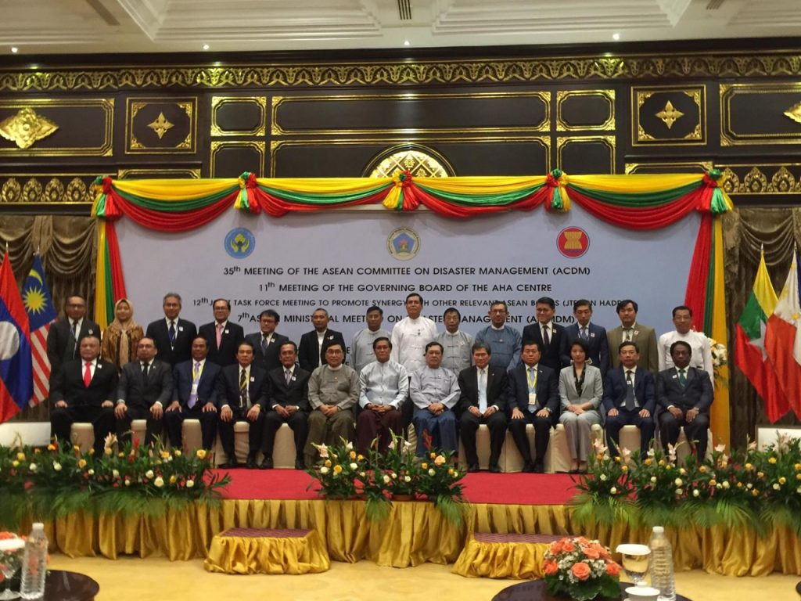

.png)


Kerja sama menurut KBBI adalah kegiatan atau usaha yang dilakukan beberapa orang, seperti lembaga, pemerintah, atau sejenisnya, untuk mencapai tujuan bersama. Sama halnya seperti kerjasama yang terjalin oleh negara-negara yang ada di dunia. Kerjasama antarnegara ini dilakukan untuk berbagai tujuan, seperti meningkatkan hubungan antar negara, mencapai pertumbuhan ekonomi, mengatasi masalah global, dll. Kerjasama antarnegara memiliki 3 jenis, yaitu kerjasama bilateral, regional, dan multilateral. Yuk, jelajahi satu per satu dibawah ini! ⬇️
Kerjasama bilateral adalah kerjasama yang terjalin antar 2 negara. Salah satunya hubungan bilateral yang terjalin antara Indonesia dengan Swedia yang pertama kali terjalin pada tahun 1950. Hubungan ini sempat merenggang karena sikap Pemerintah Indonesia terhadap GAM (Gerakan Aceh Merdeka), yang tidak sesuai dengan prinsip-prinsip HAM yang dijunjung tinggi oleh Swedia. Namun, Swedia tetap berperan aktif dalam membantu Indonesia menghadapi Tsunami Aceh 2004. Akhirnya pada tahun 2005, ditandatangani perjanjian "Negosiasi Perdamaian 2005" dimana Swedia menjadi penengah antara Indonesia dengan Aceh. Sejak saat itu, hubungan kedua negara kembali berjalan dengan baik.
Mereka lalu melakukan kerja sama pada bidang ekonomi, dimana menteri PPn dan Menteri infrastruktur Swedia menandatangani perjanjian kerjasama Blue Economy. Perjanjian ini tujuannya untuk pembangunan berkelanjutan dan pemulihan ekonomi kedua negara, khususnya di bidang perikanan dan industri laut. Kerjasama ini terus berlanjut hingga sekarang, ditunjukkan dengan kebijakan yang dikeluarkan pemerintah Indonesia berkaitan dengan perlindungan ekosistem laut.
Selain itu di bidang pendidikan, kementerian luar negeri RI dan Dubes Swedia bekerjasama dalam membangun SDM yang maju & inovatif melalui pendidikan. Swedia membantu meningkatkan kualitas pendidikan Indonesia dengan memperkenalkan konsep Triple Helix (Kerjasama antara pemerintah, industri dan universitas untuk meningkatkan mutu Pendidikan.) Kerjasama ini ditandai dengan penandatanganan MoU antara PT. SKF Industrial Indonesia & Widya Edukasi.
Selanjutnya ada pula Kerja sama dibidang pertahanan. Ditandai dengan penandatangan Persetujuan Kerja sama Pertahanan oleh Menteri Pertahanan RI dan Swedia. Kerjasama ini dilakukan untuk meningkatkan & memperkuat hubungan bilateral, sekaligus saling bertukar pengalaman terkait pertahanan kenegaraan.
Kemudian ada Kerjasama di bidang pariwisata. KBRI Stockholm bekerja sama dengan Swedia untuk memberikan beragam informasi destinasi pariwisata Indonesia kepada pengunjung Travel News Market yang diselenggarakan setiap tahunnya. Berkat kerja sama ini, jumlah turis asing yang berkunjung ke Indonesia mengalami peningkatan dari tahun ke tahun. Masyarakat Swedia juga mendapat pengetahuan baru tentang kebudayaan Indonesia.
Terakhir, ada kerja sama di bidang lingkungan. Swedia ingin membantu Indonesia dalam perkembangan sawit di Indonesia khususnya di Kalimantan dan Sumatera agar tidak merusak lingkungan. Swedia juga ingin membagikan cara pelestarian hutan (Forest Law 1903) kepada Indonesia untuk pelestarian lingkungan yang lebih baik di masa depan. Berkat kerja sama ini, pemerintah Indonesia mendapat wawasan baru tentang pengelolaan kebun sawit yang baik. Pemerintah Swedia juga memperoleh wawasan baru terkait dampak Forest Law terhadap Indonesia.
Kerja sama regional merupakan kerjasama antar beberapa negara dalam suatu kawasan tertentu untuk mencapai tujuan bersama di bidang politik, ekonomi, sosial, budaya dan keamanan. Kerja sama regional biasanya dilakukan dengan perjanjian/terbentuknya organisasi. Biasanya kerjasama regional dilakukan untuk meningkatkan stabilitas dan keamanan, peningkatan ekonomi, penyelesaian masalah, peningkatan kesejahteraan masyarakat, dll.
Adapun contoh konkret dari kerjasama regional ini, dapat dilihat dari kerja sama ASEAN dimana Indonesia merupakan salah satu anggota dari organisasi kerjasama tersebut. Indonesia bersama negara-negara ASEAN lainnya membentuk suatu kesatuan bernama “ASEAN Agreement on Disaster Management and Emergency Response (AADMER).” Kesatuan ini dibuat untuk menghadapi masalah bencana alam yang sering terjadi di kawasan Asia. Contohnya saat terjadi gempa Aceh 2010 lalu, pemerintah Indonesia dan negara-negara ASEAN bersama-sama membantu memberikan sembako, dana, dan melakukan berbagai upaya lainnya untuk membantu meminimalisir dampak gempa ini.
Kerja sama multilateral merupakan kerjasama yang melibatkan tiga negara/lebih untuk mengatasi isu global dalam bidang ekonomi, kesehatan, keamanan, maupun lingkungan. Kerjasama multilateral akan menciptakan perdamaian & stabilitas dunia serta meningkatkan hubungan diplomatik antarnegara.
Adapun contoh kerjasama multilateral yaitu terbentuknya Perserikatan Bangsa-Bangsa (PBB). Contoh konkretnya dapat dilihat saat Indonesia bekerjasama dengan PBB dalam mengirimkan Pasukan Garuda untuk membantu operasi perdamaian di negara yang sedang mengalami konflik, seperti di Timur Tengah (1957) dan Vietnam (1973).
Pada gambar dibawah terlihat juga bahwa Pasukan Garuda yang dikirimkan oleh Indonesia, membantu proses perdamaian dan pengamanan rakyat Afrika.

Dari ketiga jenis kerja sama ini, tentu ada nilai-nilai Pancasila yang diterapkan pula. Yaitu sila ketiga "Persatuan Indonesia," dimana dengan persatuan yang kuat, kerja sama antarnegara akan terjalin dengan baik. Persatuan yang kuat terjalin antar pemerintah dan masyarakat suatu negara (Indonesia) juga membuat kerja sama yang dilakukan berjalan dengan lancar. Sila ketiga juga diterapkan dalam sikap menghargai dan menghormati keberagaman sosial dan budaya dari kerja sama antarnegara ini. Walaupun kerja sama antarnegara terdiri dari orang-orang dengan latar belakang yang berbeda, namun mereka tetap dapat bersatu dan mewujudkan kerja sama ini dengan baik.